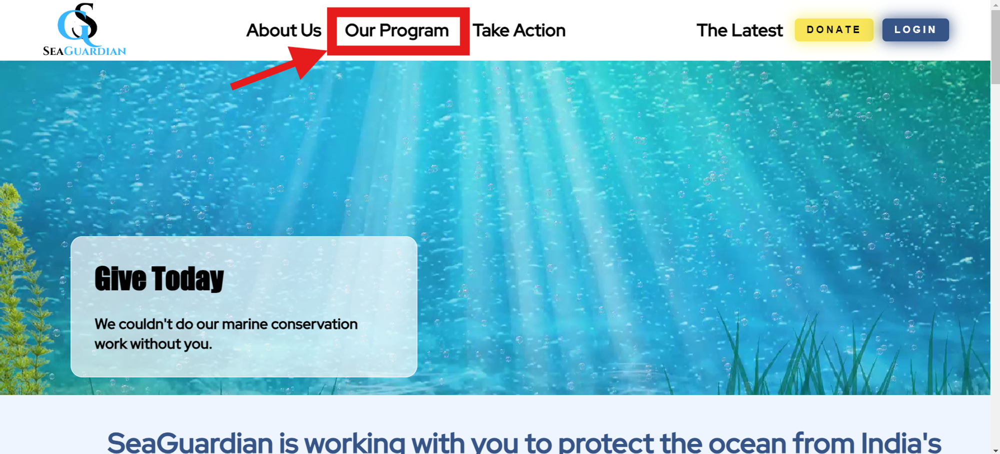
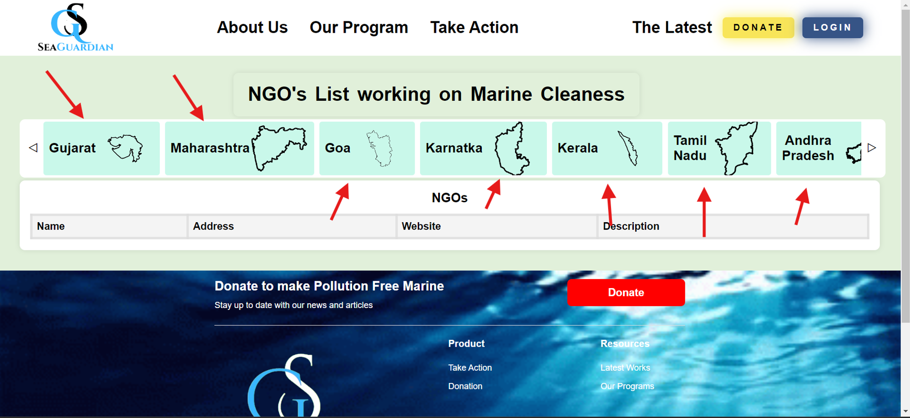

Articles in this section
How Can We Connect With An NGO?
Connecting with an NGO is an easy task on our website. It provides you with information of different
NGOs working in a specific state, their address, official website and their working areas.
To connect with an NGO, you can click on the “OUR PROGRAM” button at the top header :

When you click on "OUR PROGRAM," a new window of opportunity unfolds before you. You'll seamlessly
transition to a dedicated page meticulously designed to provide insight into our expansive network.
Here, you'll find an array of cities, each representing a nexus of impactful change.

With a simple click on any city that captures your curiosity, you're granted access to a rich reservoir
of information about the diverse NGOs diligently operating within its boundaries. This curated selection
offers a comprehensive overview of their missions, initiatives, and impact, empowering you to make
informed decisions about your engagement.
Moreover, facilitating seamless interaction, each NGO listing features a direct website link. This means
that with just a click, you can swiftly connect with these organizations, explore their work in-depth,
and potentially embark on collaborative endeavors or extend support to their causes.